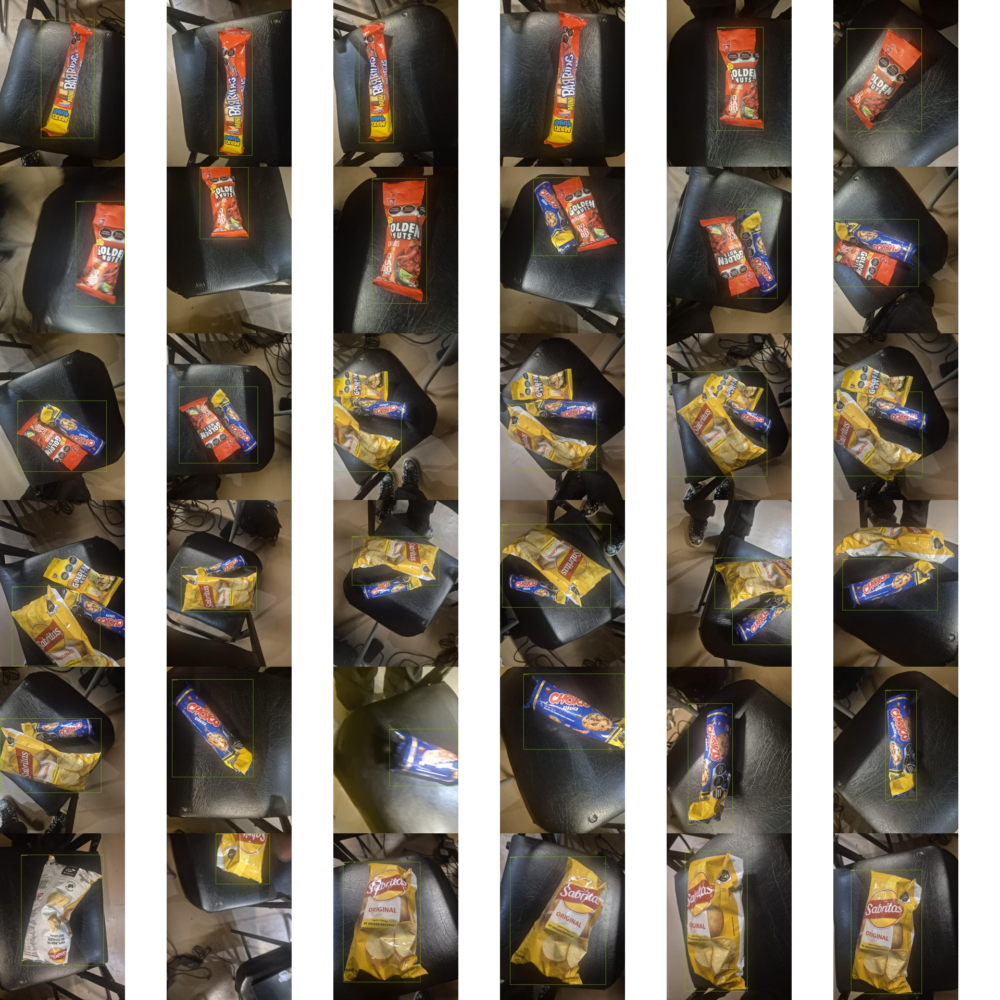

Registrar una venta y su cobro a la velocidad del mostrador:
foto o voz → la IA propone → tú confirmas.
[Nombre 1 — líder] · [Nombre 2] · [Nombre 3] · [Nombre 4]
Dueña o encargada de una tiendita o puesto de comida en Oaxaca. Manos ocupadas, señal irregular, poca costumbre de usar apps de punto de venta.
Elige el cliente → suma de memoria → cobra → anota en la libreta (si le da tiempo) → al cierre cuenta el efectivo y revisa el celular.
Ley de Economía Digital: para cobrar con DiMo/CoDi primero se necesita un registro confiable de cada venta.
| Medida | Libreta | Caja Clara |
|---|---|---|
| Pasos por venta | 5 manuales | 4, total calculado |
| Tiempo por 10 ventas | [medir] | [medir] |
| Errores en 10 ventas | [medir] | [medir] |
Además: pasar la libreta a digital con una foto de la hoja.
App Flutter (Android) ──HTTPS──► Gateway FastAPI ──► Detector DINO ResNet-50 (TAO) → TensorRT · RTX 2060
voz: dictado Android ──► Asistente Qwen2.5-1.5B + LoRA (propio) · RTX 2060
└─ /libreta → Nemotron 3.5 Super VL (servicio NVIDIA, complemento)
──────────────────────────────► Gundani (VPS): Qwen2.5-3B + QLoRA · caja y cobros SIMULADOS
El código valida que el producto exista y que la persona lo haya mencionado, y calcula precios y totales.
/salud y la app (Libro → Modelos de IA en uso) muestran el sha256 del engine e58f31e3… y del adaptador 72a3259e…
Base: DINO ResNet-50 preentrenado en COCO (NGC).
Ajuste: TAO Toolkit 5.5 en Tesla T4 (DLI), 12 épocas por versión.
| Conjunto | Imágenes |
|---|---|
| train | 819 → 930 (+ fotos propias) |
| val | 97 |
| test | 106 |
| fotos propias reservadas (p03) | 36 |
7 clases. Roboflow (CC BY 4.0) + fotos propias corregidas a mano. División 80/10/10 por imagen original; sin duplicados entre conjuntos.

Detecciones del v3 en fotos reservadas
| Versión | Test público mAP50 | Fotos propias: conteo exacto | Falsos positivos |
|---|---|---|---|
| v1 (solo públicas) | 1.00 | 31% | 100% |
| v2 (+ p01, p02) | [evaluar] | 64% | 0% |
| v3 (en la app) | [evaluar] | 67% | 11% |
Sabritas sola 6/6 · chokis con distractor 5/5 · solo distractor 8/9
Chokis junto a sabritas: 1/11. Por eso la persona revisa antes de guardar.
El DINO base (80 clases COCO) no tiene estos productos: no es comparable en la misma tarea. TensorRT: ~89 ms por foto.
Convierte lo dicho en UNA acción JSON: agregar, quitar, forma de pago, consulta, libreta, aclarar, fuera de alcance. LoRA r=16 · 1,165 ejemplos sintéticos · 15.3 min en Tesla T4.
coincidencia exacta (base: 1.4%)
JSON válido (base: 45.9%)
casos reservados exactos (base: 0/14)
Mismos 74 casos, mismo prompt, temperatura 0. Errores: "ponme tlayudas" (asumió 1), "siempre no 2 varilla" (agregó en vez de quitar). Referencia: Nemotron Bolt E4B con ejemplos, 75% exacto.
| Herramienta | Función |
|---|---|
| Servidores DLI (Tesla T4) | Entrenar 3 versiones del detector y el LoRA del asistente (registros en training/) |
| TAO Toolkit 5.5 | Ajuste fino de DINO, evaluación y exportación a ONNX |
| TensorRT 11.5 | Engine optimizado del detector en la laptop: ~89 ms por foto |
| Nemotron 3.5 Super VL | Complemento: transcribir la hoja de la libreta (no acredita el requisito de visión) |
| Nemotron 3.5 Bolt E4B | Referencia en la evaluación del asistente |
Nada se guarda sin revisar. Los modelos se equivocan y es dinero.
Micrófono siempre a la mano; entiende "cocas", "papitas" y errores de dictado.
Nunca inventa un producto; los renglones dudosos quedan pendientes.
[Persona A: perfil · dificultad · cambio realizado]
[Persona B: perfil · dificultad · cambio realizado]
Prueba interna: el dictado llegaba cortado ("cobra tres" → 3 tlayudas). Se corrigió: la app espera la frase completa y el servidor rechaza productos no mencionados.
Respaldo: video de 3 minutos. 9 casos del recorrido medidos en docs/evidencias.md.
Más fotos reales por producto, evaluar v3 en el test, y conectar el cobro a un entorno de pruebas real de CoDi.
Para la elaboración de este trabajo se utilizó Claude (Anthropic) como apoyo en la planeación técnica, borradores de scripts (preparación de datos, dataset sintético, entrenamiento LoRA, evaluación, servidores y TensorRT), depuración y documentación; Google Stitch (Google) en el prototipado visual de pantallas; y un asistente de código local en la revisión del repositorio. Quienes firman este trabajo han revisado y editado el contenido, verificado las fuentes y asumen plena responsabilidad por la versión final.
Firma del líder: ______________________
Código, datos, registros y hashes: github.com/Rene3FG/caja-clara